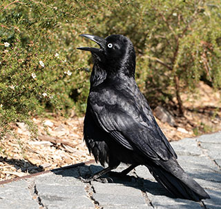
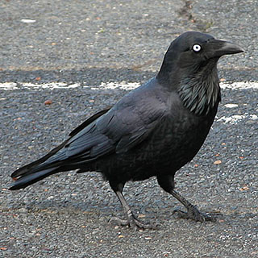

Taxonomy and naming
Australian raven was first described by Nicholas Aylward Vigors and Thomas Horsfield in 1827, when they reported George Caley's early notes on the species from the Sydney district. Its specific epithet coronoides "crow-shaped" is derived from the Greek corone/κορόνη "crow" and eidos/είδος "shape" or "form".The two naturalists regarded the Australian raven as very similar in appearance to the carrion crow (C. corone) of Europe, though they noted was larger with a longer bill. They did not give it a common name. The location where the type specimen was collected is not recorded, but thought to be in the Parramatta district.
Christian Ludwig Brehm described Corvus affinis in 1845,later determined to be this species. In his 1865 Handbook to the Birds of Australia, John Gould recognised only one species of corvid in Australia, Corvus australis ,which he called the white-eyed crow.
He used Johann Friedrich Gmelin's 1788 name, which predated Vigors and Horsfield's description.  In 1877 Richard Bowdler Sharpe recognised two species, but recorded that the feather bases of the type specimen of C. coronoides were white. He named C. coronoides as the "crow" and C. australis (as Corone australis) the "raven". Scottish naturalist William Robert Ogilvie-Grant corrected this in 1912 after re-examining the type specimen, clarifying the species as C. coronoides (raven, and incorporating little and forest ravens) and C. cecilae (Torresian crow).
Gregory Mathews described the western subspecies perplexus in 1912, naming it the southwestern crow and noting that it was smaller than the nominate subspecies. He called C.coronoides coronoides the eastern crow, listing its range as New South Wales, and described what is now the Australian crow as another subspecies, C. coronoides cecilae, calling it the north-western crow and recording its range as northwestern Australia. In the same work he listed the raven as Corvus marianae, with a type specimen from Gosford and listing its range as New South Wales. He listed the little raven and forest raven as subspecies. Mathews had erected C. marianae in 1911 as the name after declaring Corvus australis Gould to be preoccupied.French-American ornithologist Charles Vaurie acted as First Revisor under Article 24 of the International Code of Zoological Nomenclature (ICZN) Code and discarded C. australis as a junior homonym—in 1788, Gmelin had used the same binomial name to describe the black nunbird—to preserve the stability of the name. This has been followed by later authors.
German ornithologist Erwin Stresemann lumped all Australian corvids plus other species as far as India into a single species, C. coronoides, as he believed there was intergradation between all characteristics such as iris colour, colour of feather bases and plumage. This was hotly disputed by Mathews. The official RAOU checklist listed three species (Australian raven, Torresian crow and little crow), with the little raven recognised as a fourth species in 1967 and forest raven in 1970.Streseman described C. difficilis in 1943 from a single specimen, now thought to have been an unusual Australian raven or an Australian raven/Torresian crow hybrid. Alternative names sometimes seen include southern raven, southern crow and Kelly, the last thought to have alluded to the Kelly Gang, though did not appear until the 1920s. Southern crow was considered by the RAOU before Australian raven was adopted as the official name for the species in 1926. The term "crow" is colloquially applied to any or all species of Australian corvid. The Australian raven was called wugan by the local Eora and Darug inhabitants of the Sydney Basin.
Evolution and systematics
The Australian raven's closest relatives are the other two species of raven occurring in Australia: the little raven and forest raven. The Australian raven is also somewhat closely related to the Torresian and little crow, although not as closely related as it is to the other raven species. Initial single gene genetic analysis of the genus using mitochondrial DNA showed the three raven species to belong to one lineage and the two crows to another. The genetic separation between species is small and there was a suggestion the little raven may be nested within the Australian raven, though the authors conceded more genetic work was needed.
Subsequent multigene analysis using nuclear DNA by Jønsson and colleagues in 2012 showed the eastern and western subspecies of the Australian raven to form two clades, almost as genetically distinct as the forest and little raven are to each other. This led the authors to propose that the subspecies be recognised as separate species.
Ian Rowley proposed that the common ancestor of the five species diverged into a tropical crow and temperate raven sometime after entering Australia from the north, which molecular evidence indicates occurred in the early Pliocene epoch around 4 million years ago.The raven diverged into the ancestor of the forest and little ravens in the east and Australian raven in the west, this split occurring around 2 million years ago in the early Pleistocene.
As the climate became cooler and dryer, the aridity of central Australia split them entirely. Furthermore, the eastern birds diverged into nomadic little ravens and, in forested refuges, forest ravens. As the climate eventually became warmer, the western birds spread eastwards and almost outcompeted forest ravens on mainland Australia. Rowley noted that the western subspecies of the Australian raven had features intermediate between the eastern subspecies of Australian and little ravens.
Two subspecies are recognised: 1.C. c. coronoides, the nominate or eastern subspecies, is found across most of eastern Australia. Its range is also highly correlated with the presence of sheep. This is thought to be because of the frequency of dead animals, which can be an important source of food. Ornithologist Ian Rowley held that the eastern subspecies was expanding eastwards before European colonisation, and that this suggested it was of younger origin than the western subspecies, which appears static. The advent of agriculture facilitated further spread.
2.C. c. perplexus, the western subspecies, occurs from the head of the Great Australian Bight in South Australia westwards into Western Australia where its northern limits are Shark Bay and the mulga-eucalypt boundary line. It is less specialised in its habitat, as it does not share its distribution with the little raven, and does not appear to correlate with the range of sheep.The western subspecies has a slightly lower-pitched call than that of the eastern subspecies, with similarities to calls of the little raven. Of smaller size overall, it has a more slender bill and shorter hackles. There is otherwise no difference in plumage.Intermediate birds are found in the Eyre Peninsula, Gawler Ranges and vicinity of Lake Eyre in South Australia.